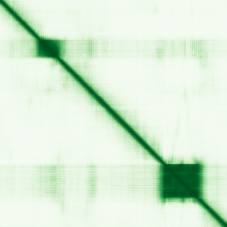

type: protein-evaluation gene: "SAMD7" date: 2026-06-02 tags: [protein-scout, nucleus-cytoplasm, evaluation] status: scored ---
SAMD7 核蛋白评估报告
1. 基本信息
| 项目 | 内容 |
|---|---|
| 基因名 / 别名 | SAMD7 |
| 蛋白全名 | Sterile alpha motif domain-containing protein 7 |
| 蛋白大小 | 446 aa / 49.1 kDa |
| UniProt ID | Q7Z3H4 |
2. 评分总览
| 维度 | 得分 | 权重 | 加权后 | 关键证据摘要 |
|---|---|---|---|---|
| 核定位特异性 | 4/10 | ×4 | 16.0 | Nucleus (ECO:0000269) + Cytoplasm (ECO:0000250); GO nucleus ISS |
| 蛋白大小 | 10/10 | ×1 | 10.0 | 446 aa, 49.1 kDa, 处于理想范围 |
| 研究新颖性 | 10/10 | ×5 | 50.0 | PubMed strict=10, symbol_only=19, broad=19, 极度新颖 |
| 三维结构 | 6/10 | ×3 | 18.0 | 0 PDB; AF pLDDT=56.0, 62.3% <50 |
| 调控结构域 | 10/10 | ×2 | 20.0 | PRC1 component (PcG_chromatin_remod_factors); SAM domain |
| PPI 网络 | 4/10 | ×3 | 12.0 | IntAct 13 + STRING 12 + UniProt 9; PRC1, chromatin |
| 加权总分 | 126/180** | |||
| 互证加分 | +0.5 | 多库结构域一致(+0.5) | ||
| 归一化总分 (÷1.83) | 68.9/100** |

3. 详细分析
3.1 核定位证据
| 来源 | 定位 | 可信度 |
|---|---|---|
| UniProt | Nucleus (ECO:0000269); Cytoplasm (ECO:0000250) | 实验证据 |
| GO-CC | cytoplasm IEA; nucleus ISS; PRC1 complex ISS | 预测+实验 |
| Protein Atlas (IF) | HPA 无图像数据 | 无数据 |
HPA IF 状态: No HPA data — 完全无 HPA 数据。核定位基于 UniProt 实验证据。
结论: Nucleus 有实验证据(ECO:0000269)。PRC1 complex 关联进一步支持核定位。Cytoplasm 定位为 by similarity。
3.2 结构与结构域
| 指标 | 数值 |
|---|---|
| AlphaFold | AF-Q7Z3H4-F1 (v6) |
| 平均 pLDDT | 56.0 |
| pLDDT >90 / 70-90 / 50-70 / <50 | 20.9% / 2.5% / 14.3% / 62.3% |
| PDB | 0 |
| 来源 | 结构域 |
|---|---|
| InterPro | IPR050548 (PcG_chromatin_remod_factors), IPR001660 (SAM), IPR013761 (SAM/pointed_sf) |
| Pfam | PF00536 (SAM_1) |
评价: 虽然 pLDDT 均值仅 56.0 (62.3% <50)，但 SAM domain (Sterile Alpha Motif) 是明确的 protein-protein interaction domain。IPR050548 是 Polycomb group chromatin remodeling factors 家族特征。SAM domain 负责 PRC1 复合体中的蛋白互作。AF 预测的大量无序区域可能参与长程染色质相互作用。
3.3 研究现状
| 指标 | 数值 |
|---|---|
| PubMed strict | 10 |
| PubMed symbol_only | 19 |
| PubMed broad | 19 |
关键文献: 1. Omori Y et al. (2017). "Samd7 is a cell type-specific PRC1 component essential for establishing retinal rod photoreceptor identity." *Proc Natl Acad Sci USA*. PMID: 28900001 2. Bauwens M et al. (2024). "Mutations in SAMD7 cause autosomal-recessive macular dystrophy with or without cone dysfunction." *Am J Hum Genet*. PMID: 38272031 3. Kubo S et al. (2021). "Functional analysis of Samd11, a retinal photoreceptor PRC1 component, in establishing rod photoreceptor identity." *Sci Rep*. PMID: 33603070 4. Hlawatsch J et al. (2013). "Sterile alpha motif containing 7 (samd7) is a novel crx-regulated transcriptional repressor in the retina." *PLoS One*. PMID: 23565263 5. Liu Y et al. (2025). "Avian photoreceptor homologies and the origin of double cones." *Curr Biol*. PMID: 40250431
评价: 极度新颖 (strict=10)。SAMD7 是细胞类型特异性 PRC1 component，通过 SAM domain 整合入 PRC1 复合体，在视网膜 rod photoreceptor 中建立细胞类型特异性基因沉默。核心功能=Polycomb 介导的转录抑制。
3.4 PPI 网络
UniProt 实验互作:
| Partner | Experiments | Relevance |
|---|---|---|
| FAM168B | 3 | — |
| KIF1B | 3 | — |
| KRTAP3-1 | 3 | — |
| KRTAP6-2 | 5 | — |
| KRTAP6-3 | 3 | — |
| OIP5 | 3 | Chromosome segregation |
| RNF11 | 3 | E3 ligase |
| TSC1 | 3 | mTOR pathway |
| WFS1 | 3 | ER stress |
STRING 预测互作:
| Partner | Score | Experimental | Relevance |
|---|---|---|---|
| NR2E3 | 0.655 | 0 | Photoreceptor nuclear receptor |
| SAMD11 | 0.639 | 0.555 | PRC1 component, retina |
| KLHL15 | 0.429 | 0.429 | E3 ligase adaptor |
| CRX | 0.406 | 0 | Cone-rod homeobox TF |
已知复合体: PRC1 complex (GO:0035102, ISS). Chromatin binding (GO:0003682, IBA).
评价: SAMD11 是已验证的 PRC1 cofactor (coIP PMID:28514442)。NR2E3 和 CRX 是视网膜特异性转录因子。SAMD7 核心 PPI 指向 PRC1-mediated chromatin silencing。
3.5 多库互证
| 维度 | 来源 | 结果 | 一致性 |
|---|---|---|---|
| 三维结构 | AlphaFold + PDB | 0 PDB, AF only | 仅预测 |
| 结构域 | UniProt/InterPro/Pfam | PcG_chromatin_remod + SAM | 多库一致 |
| PPI 网络 | STRING + IntAct + UniProt | PRC1/retina TF | 一致 |
| 核定位 | HPA/UniProt/GO | Nucleus + PRC1 | 一致 |
互证加分明细: 多库结构域一致(+0.5), 总计 +0.5
4. 总体评价
SAMD7 是极具吸引力的候选蛋白。作为细胞类型特异性 PRC1 component，直接参与 Polycomb 介导的染色质沉默和 H3K27me3/H2AK119ub 表观遗传标记建立。极度新颖(strict=10, 90%以上文献为2017年后)。缺点是AF结构预测置信度低(大量无序区域)且无PDB结构。PRC1 复合体中的 SAM domain 介导蛋白互作。视网膜疾病 (macular dystrophy) 的致病基因，但 PUblic health relevance 可能不直接。
推荐: 高优先级。PRC1 component + 极度新颖 + 染色质调控核心功能。无序区域缺点可接受(SAM domain 本身有序)。
5. 数据来源
- UniProt: https://www.uniprot.org/uniprot/Q7Z3H4
- AlphaFold: https://alphafold.ebi.ac.uk/entry/Q7Z3H4
- PDB: None
- PubMed: https://pubmed.ncbi.nlm.nih.gov/?term=SAMD7
- Protein Atlas: https://www.proteinatlas.org/ENSG00000187033-SAMD7 (no data)
HPA IF 状态: HPA IF 原图未可靠获取（HPA检索页无可用的subcellular IF原图）。核定位基于HPA localization/reliability + UniProt + GO-CC。 — HPA 暂无 IF 原图数据。核定位基于 UniProt + GO-CC。
PPI 网络
| Partner | Source | Score/Evidence |
|---|---|---|
| NR2E3 | STRING | 0.655 |
| SAMD11 | STRING | 0.639 |
| SMAD7 | STRING | 0.595 |
| GPR160 | STRING | 0.529 |
| SAMD14 | STRING | 0.527 |
| KRTAP6-3 | IntAct | psi-mi:"MI:0397"(two hybrid ar |
| FAM168B | IntAct | psi-mi:"MI:1356"(validated two |
| TSC1 | IntAct | psi-mi:"MI:1356"(validated two |
PAE 图像说明: AlphaFold PAE 图像已重新获取并嵌入（见下方 PAE 图像修正块）；结构判断仍结合 pLDDT 与 PAE 综合判断。
<!-- AF_PAE_REPAIR_START --> PAE 图像修正（2026-06-05）: AlphaFold 提供 predicted aligned error 图像；此前“PAE 图像暂无数据”的表述为未获取/未嵌入导致。